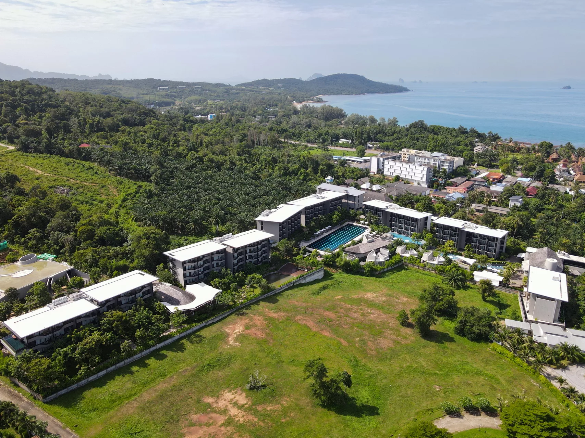
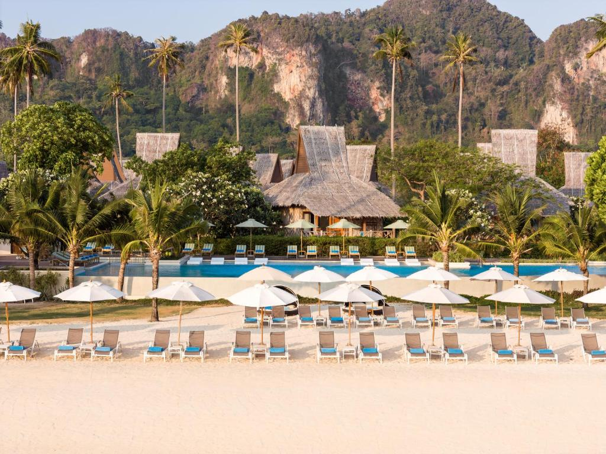
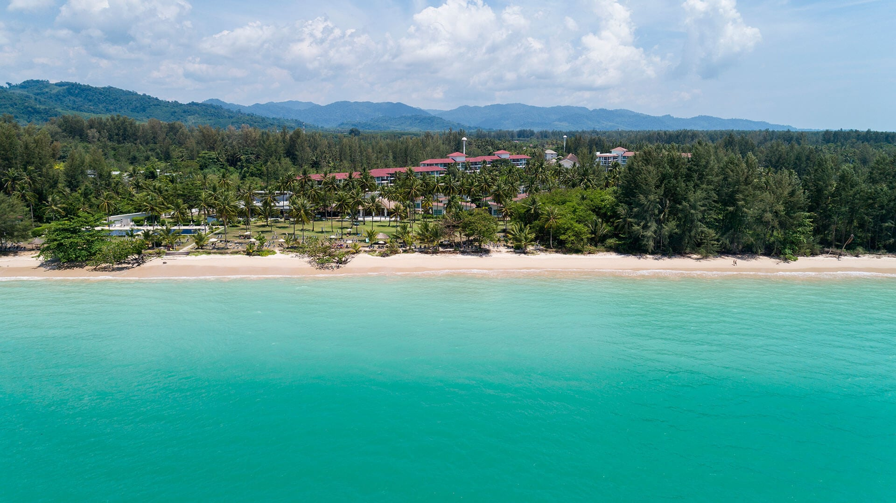

Photo non disponible
Étape 1 · Bangkok · 3 nuits · 30/11 → 03/12
Chatrium Hotel Riverside Bangkok
vue sur le fleuve
Voir l'hôtelTrois façons de vivre le voyage, chacune avec les meilleurs hôtels qui tiennent dans le budget : chambres vue mer, une suite au bord de la plage à Phi Phi, et un départ deux semaines plus tôt pour payer les vols moins cher. Les montants et les autres choix possibles sont sur la page Construction.
Tout le voyage en 14 nuits : la ville au bord du fleuve, les falaises de Krabi, trois nuits sur l'île, puis les longues plages de Khao Lak. Arrivée à Bangkok, retour par Phuket.





| Trajet | Vol | Horaires locaux et escales |
|---|---|---|
| Tunis → Bangkok | QR1400 Qatar Airways | Tunis 29/11 16:00 → Doha 29/11 23:25 |
| QR834 Qatar Airways | Doha 30/11 01:45 → Bangkok 30/11 12:15 · escale à Doha 2 h 20 | |
| Bangkok → Krabi | VZ340 Thai Vietjet | Bangkok 03/12 07:00 → Krabi 03/12 08:30 |
| Phuket → Tunis | EY413 Etihad Airways | Phuket 14/12 21:00 → Abou Dabi 15/12 00:35 |
| EY739 Etihad Airways | Abou Dabi 15/12 02:20 → Tunis 15/12 06:15 · escale à Abou Dabi 1 h 45 |
Qatar à l'aller, escales de moins de 3 h. Arrivée à Bangkok le 30/11 à 12:15 (au lieu de 07:15) : la première demi-journée est plus courte. Aucun retour Qatar depuis Phuket avec une escale de moins de 3 h. Aucun vol direct n'existe entre Tunis et la Thaïlande.
| Quand | Trajet | Durée |
|---|---|---|
| 30/11 | Aéroport BKK → hôtel au bord du fleuve | 45 min – 1 h |
| 03/12 | Hôtel → aéroport BKK (vol à 07:00) | 45 min – 1 h |
| 03/12 | Aéroport KBV → Ao Nang | 35–50 min |
| 07/12 | Ao Nang → Koh Phi Phi (Ao Nang Princess, 09:30 → 11:30) + taxe Tonsai | ≈ 2 h |
| 10/12 | Koh Phi Phi → quai de Rassada, Phuket (Andaman Wave Master) | ≈ 3 h |
| 10/12 | Quai de Rassada → hôtel à Khao Lak (voiture privée) | ≈ 1 h 30 |
| 14/12 | Khao Lak → aéroport HKT | 45 min – 1 h 40 |
Sans Bangkok : plus de temps à la plage et sur l'île, et une dernière nuit à 5 minutes de l'aéroport.
| Trajet | Vol | Horaires locaux et escales |
|---|---|---|
| Tunis → Phuket | QR1400 Qatar Airways | Tunis 29/11 16:00 → Doha 29/11 23:25 |
| QR840 Qatar Airways | Doha 30/11 02:15 → Phuket 30/11 12:55 · escale à Doha 2 h 50 | |
| Phuket → Tunis | EY413 Etihad Airways | Phuket 14/12 21:00 → Abou Dabi 15/12 00:35 |
| EY739 Etihad Airways | Abou Dabi 15/12 02:20 → Tunis 15/12 06:15 · escale à Abou Dabi 1 h 45 |
Qatar à l'aller (arrivée à Phuket), escales de moins de 3 h. Arrivée à Phuket le 30/11 à 12:55 : il faut ajouter la route Phuket → Ao Nang (≈ 2 h 30, prix non relevé). Qatar ne dessert pas Krabi. Aucun vol direct n'existe entre Tunis et la Thaïlande.
| Quand | Trajet | Durée |
|---|---|---|
| 30/11 | Aéroport KBV → Ao Nang | 35–50 min |
| 05/12 | Ao Nang → Koh Phi Phi (Ao Nang Princess, 09:30 → 11:30) + taxe Tonsai | ≈ 2 h |
| 08/12 | Koh Phi Phi → quai de Rassada, Phuket (Andaman Wave Master) | ≈ 3 h |
| 08/12 | Quai de Rassada → hôtel à Khao Lak (voiture privée) | ≈ 1 h 30 |
| 13/12 | Khao Lak → Nai Yang | ≈ 1 h 25 |
| 14/12 | Nai Yang ⇄ aéroport HKT | 5–10 min |
Le même voyage deux semaines plus tôt, avec un aller-retour Qatar Airways sur Phuket bien moins cher : l'économie sur les vols permet de monter en gamme à l'hôtel.
| Trajet | Vol | Horaires locaux et escales |
|---|---|---|
| Tunis → Phuket | QR1400 Qatar Airways | Tunis 18/11 16:00 → Doha 18/11 23:25 |
| QR840 Qatar Airways | Doha 19/11 02:15 → Phuket 19/11 12:55 · escale à Doha 2 h 50 | |
| Phuket → Tunis | EY413 Etihad Airways | Phuket 02/12 21:00 → Abou Dabi 03/12 00:35 |
| EY739 Etihad Airways | Abou Dabi 03/12 02:20 → Tunis 03/12 06:15 · escale à Abou Dabi 1 h 45 |
Qatar à l'aller + Etihad au retour, escales de moins de 3 h. Arrivée à Phuket le 19/11 à 12:55. Le seul retour avec une escale de moins de 3 h part le 02/12 à 21:00 : une nuit de moins à Ao Nang (retirée du total au prorata de l'hôtel choisi). Aucun vol direct n'existe entre Tunis et la Thaïlande.
| Quand | Trajet | Durée |
|---|---|---|
| 19/11 | Nai Yang ⇄ aéroport HKT | 5–10 min |
| 20/11 | Nai Yang → Khao Lak | ≈ 1 h 25 |
| 25/11 | Khao Lak → quai de Rassada (sens inverse de la grille publique) | ≈ 1 h 30 |
| 25/11 | Quai de Rassada → Koh Phi Phi (sens inverse de la grille publique) | ≈ 2 h |
| 28/11 | Koh Phi Phi → Ao Nang (retour Ao Nang Princess, sens inverse) | ≈ 2 h |
| 02 ou 03/12 | Ao Nang → aéroport HKT (vol de retour) | ≈ 2 h 30 |